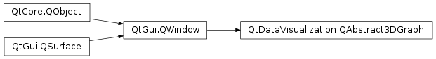

QtDataVisualization.QAbstract3DGraph¶
Inherited by: QtDataVisualization.Q3DSurface, QtDataVisualization.Q3DBars, QtDataVisualization.Q3DScatter
Synopsis¶
Functions¶
- def
activeInputHandler() - def
activeTheme() - def
addCustomItem(item) - def
addInputHandler(inputHandler) - def
addTheme(theme) - def
aspectRatio() - def
clearSelection() - def
currentFps() - def
customItems() - def
hasContext() - def
horizontalAspectRatio() - def
inputHandlers() - def
isOrthoProjection() - def
isPolar() - def
isReflection() - def
locale() - def
margin() - def
measureFps() - def
optimizationHints() - def
queriedGraphPosition() - def
radialLabelOffset() - def
reflectivity() - def
releaseCustomItem(item) - def
releaseInputHandler(inputHandler) - def
releaseTheme(theme) - def
removeCustomItem(item) - def
removeCustomItemAt(position) - def
removeCustomItems() - def
renderToImage([msaaSamples=0[, imageSize=QSize()]]) - def
scene() - def
selectedAxis() - def
selectedCustomItem() - def
selectedCustomItemIndex() - def
selectedElement() - def
selectedLabelIndex() - def
selectionMode() - def
setActiveInputHandler(inputHandler) - def
setActiveTheme(theme) - def
setAspectRatio(ratio) - def
setHorizontalAspectRatio(ratio) - def
setLocale(locale) - def
setMargin(margin) - def
setMeasureFps(enable) - def
setOptimizationHints(hints) - def
setOrthoProjection(enable) - def
setPolar(enable) - def
setRadialLabelOffset(offset) - def
setReflection(enable) - def
setReflectivity(reflectivity) - def
setSelectionMode(mode) - def
setShadowQuality(quality) - def
shadowQuality() - def
themes()
Virtual functions¶
- def
shadowsSupported()
Signals¶
- def
activeInputHandlerChanged(inputHandler) - def
activeThemeChanged(theme) - def
aspectRatioChanged(ratio) - def
currentFpsChanged(fps) - def
horizontalAspectRatioChanged(ratio) - def
localeChanged(locale) - def
marginChanged(margin) - def
measureFpsChanged(enabled) - def
optimizationHintsChanged(hints) - def
orthoProjectionChanged(enabled) - def
polarChanged(enabled) - def
queriedGraphPositionChanged(data) - def
radialLabelOffsetChanged(offset) - def
reflectionChanged(enabled) - def
reflectivityChanged(reflectivity) - def
selectedElementChanged(type) - def
selectionModeChanged(mode) - def
shadowQualityChanged(quality)
Detailed Description¶
-
PySide2.QtDataVisualization.QtDataVisualization.QAbstract3DGraph.SelectionFlag¶
-
PySide2.QtDataVisualization.QtDataVisualization.QAbstract3DGraph.ShadowQuality¶
-
PySide2.QtDataVisualization.QtDataVisualization.QAbstract3DGraph.ElementType¶
-
PySide2.QtDataVisualization.QtDataVisualization.QAbstract3DGraph.OptimizationHint¶
-
PySide2.QtDataVisualization.QtDataVisualization.QAbstract3DGraph.activeInputHandler()¶ Return type: PySide2.QtDataVisualization.QtDataVisualization::QAbstract3DInputHandler
-
PySide2.QtDataVisualization.QtDataVisualization.QAbstract3DGraph.activeInputHandlerChanged(inputHandler)¶ Parameters: inputHandler – PySide2.QtDataVisualization.QtDataVisualization::QAbstract3DInputHandler
-
PySide2.QtDataVisualization.QtDataVisualization.QAbstract3DGraph.activeTheme()¶ Return type: PySide2.QtDataVisualization.QtDataVisualization::Q3DTheme
-
PySide2.QtDataVisualization.QtDataVisualization.QAbstract3DGraph.activeThemeChanged(theme)¶ Parameters: theme – PySide2.QtDataVisualization.QtDataVisualization::Q3DTheme
-
PySide2.QtDataVisualization.QtDataVisualization.QAbstract3DGraph.addCustomItem(item)¶ Parameters: item – PySide2.QtDataVisualization.QtDataVisualization::QCustom3DItemReturn type: PySide2.QtCore.int
-
PySide2.QtDataVisualization.QtDataVisualization.QAbstract3DGraph.addInputHandler(inputHandler)¶ Parameters: inputHandler – PySide2.QtDataVisualization.QtDataVisualization::QAbstract3DInputHandler
-
PySide2.QtDataVisualization.QtDataVisualization.QAbstract3DGraph.addTheme(theme)¶ Parameters: theme – PySide2.QtDataVisualization.QtDataVisualization::Q3DTheme
-
PySide2.QtDataVisualization.QtDataVisualization.QAbstract3DGraph.aspectRatio()¶ Return type: PySide2.QtCore.qreal
-
PySide2.QtDataVisualization.QtDataVisualization.QAbstract3DGraph.aspectRatioChanged(ratio)¶ Parameters: ratio – PySide2.QtCore.qreal
-
PySide2.QtDataVisualization.QtDataVisualization.QAbstract3DGraph.clearSelection()¶
-
PySide2.QtDataVisualization.QtDataVisualization.QAbstract3DGraph.currentFps()¶ Return type: PySide2.QtCore.qreal
-
PySide2.QtDataVisualization.QtDataVisualization.QAbstract3DGraph.currentFpsChanged(fps)¶ Parameters: fps – PySide2.QtCore.qreal
-
PySide2.QtDataVisualization.QtDataVisualization.QAbstract3DGraph.customItems()¶ Return type:
-
PySide2.QtDataVisualization.QtDataVisualization.QAbstract3DGraph.hasContext()¶ Return type: PySide2.QtCore.bool
-
PySide2.QtDataVisualization.QtDataVisualization.QAbstract3DGraph.horizontalAspectRatio()¶ Return type: PySide2.QtCore.qreal
-
PySide2.QtDataVisualization.QtDataVisualization.QAbstract3DGraph.horizontalAspectRatioChanged(ratio)¶ Parameters: ratio – PySide2.QtCore.qreal
-
PySide2.QtDataVisualization.QtDataVisualization.QAbstract3DGraph.inputHandlers()¶ Return type:
-
PySide2.QtDataVisualization.QtDataVisualization.QAbstract3DGraph.isOrthoProjection()¶ Return type: PySide2.QtCore.bool
-
PySide2.QtDataVisualization.QtDataVisualization.QAbstract3DGraph.isPolar()¶ Return type: PySide2.QtCore.bool
-
PySide2.QtDataVisualization.QtDataVisualization.QAbstract3DGraph.isReflection()¶ Return type: PySide2.QtCore.bool
-
PySide2.QtDataVisualization.QtDataVisualization.QAbstract3DGraph.locale()¶ Return type: PySide2.QtCore.QLocale
-
PySide2.QtDataVisualization.QtDataVisualization.QAbstract3DGraph.localeChanged(locale)¶ Parameters: locale – PySide2.QtCore.QLocale
-
PySide2.QtDataVisualization.QtDataVisualization.QAbstract3DGraph.margin()¶ Return type: PySide2.QtCore.qreal
-
PySide2.QtDataVisualization.QtDataVisualization.QAbstract3DGraph.marginChanged(margin)¶ Parameters: margin – PySide2.QtCore.qreal
-
PySide2.QtDataVisualization.QtDataVisualization.QAbstract3DGraph.measureFps()¶ Return type: PySide2.QtCore.bool
-
PySide2.QtDataVisualization.QtDataVisualization.QAbstract3DGraph.measureFpsChanged(enabled)¶ Parameters: enabled – PySide2.QtCore.bool
-
PySide2.QtDataVisualization.QtDataVisualization.QAbstract3DGraph.optimizationHints()¶ Return type: PySide2.QtDataVisualization.QtDataVisualization::QAbstract3DGraph.OptimizationHints
-
PySide2.QtDataVisualization.QtDataVisualization.QAbstract3DGraph.optimizationHintsChanged(hints)¶ Parameters: hints – PySide2.QtDataVisualization.QtDataVisualization::QAbstract3DGraph.OptimizationHints
-
PySide2.QtDataVisualization.QtDataVisualization.QAbstract3DGraph.orthoProjectionChanged(enabled)¶ Parameters: enabled – PySide2.QtCore.bool
-
PySide2.QtDataVisualization.QtDataVisualization.QAbstract3DGraph.polarChanged(enabled)¶ Parameters: enabled – PySide2.QtCore.bool
-
PySide2.QtDataVisualization.QtDataVisualization.QAbstract3DGraph.queriedGraphPosition()¶ Return type: PySide2.QtGui.QVector3D
-
PySide2.QtDataVisualization.QtDataVisualization.QAbstract3DGraph.queriedGraphPositionChanged(data)¶ Parameters: data – PySide2.QtGui.QVector3D
-
PySide2.QtDataVisualization.QtDataVisualization.QAbstract3DGraph.radialLabelOffset()¶ Return type: PySide2.QtCore.float
-
PySide2.QtDataVisualization.QtDataVisualization.QAbstract3DGraph.radialLabelOffsetChanged(offset)¶ Parameters: offset – PySide2.QtCore.float
-
PySide2.QtDataVisualization.QtDataVisualization.QAbstract3DGraph.reflectionChanged(enabled)¶ Parameters: enabled – PySide2.QtCore.bool
-
PySide2.QtDataVisualization.QtDataVisualization.QAbstract3DGraph.reflectivity()¶ Return type: PySide2.QtCore.qreal
-
PySide2.QtDataVisualization.QtDataVisualization.QAbstract3DGraph.reflectivityChanged(reflectivity)¶ Parameters: reflectivity – PySide2.QtCore.qreal
-
PySide2.QtDataVisualization.QtDataVisualization.QAbstract3DGraph.releaseCustomItem(item)¶ Parameters: item – PySide2.QtDataVisualization.QtDataVisualization::QCustom3DItem
-
PySide2.QtDataVisualization.QtDataVisualization.QAbstract3DGraph.releaseInputHandler(inputHandler)¶ Parameters: inputHandler – PySide2.QtDataVisualization.QtDataVisualization::QAbstract3DInputHandler
-
PySide2.QtDataVisualization.QtDataVisualization.QAbstract3DGraph.releaseTheme(theme)¶ Parameters: theme – PySide2.QtDataVisualization.QtDataVisualization::Q3DTheme
-
PySide2.QtDataVisualization.QtDataVisualization.QAbstract3DGraph.removeCustomItem(item)¶ Parameters: item – PySide2.QtDataVisualization.QtDataVisualization::QCustom3DItem
-
PySide2.QtDataVisualization.QtDataVisualization.QAbstract3DGraph.removeCustomItemAt(position)¶ Parameters: position – PySide2.QtGui.QVector3D
-
PySide2.QtDataVisualization.QtDataVisualization.QAbstract3DGraph.removeCustomItems()¶
-
PySide2.QtDataVisualization.QtDataVisualization.QAbstract3DGraph.renderToImage([msaaSamples=0[, imageSize=QSize()]])¶ Parameters: - msaaSamples –
PySide2.QtCore.int - imageSize –
PySide2.QtCore.QSize
Return type: - msaaSamples –
-
PySide2.QtDataVisualization.QtDataVisualization.QAbstract3DGraph.scene()¶ Return type: PySide2.QtDataVisualization.QtDataVisualization::Q3DScene
-
PySide2.QtDataVisualization.QtDataVisualization.QAbstract3DGraph.selectedAxis()¶ Return type: PySide2.QtDataVisualization.QtDataVisualization::QAbstract3DAxis
-
PySide2.QtDataVisualization.QtDataVisualization.QAbstract3DGraph.selectedCustomItem()¶ Return type: PySide2.QtDataVisualization.QtDataVisualization::QCustom3DItem
-
PySide2.QtDataVisualization.QtDataVisualization.QAbstract3DGraph.selectedCustomItemIndex()¶ Return type: PySide2.QtCore.int
-
PySide2.QtDataVisualization.QtDataVisualization.QAbstract3DGraph.selectedElement()¶ Return type: PySide2.QtDataVisualization.QtDataVisualization::QAbstract3DGraph.ElementType
-
PySide2.QtDataVisualization.QtDataVisualization.QAbstract3DGraph.selectedElementChanged(type)¶ Parameters: type – PySide2.QtDataVisualization.QtDataVisualization::QAbstract3DGraph.ElementType
-
PySide2.QtDataVisualization.QtDataVisualization.QAbstract3DGraph.selectedLabelIndex()¶ Return type: PySide2.QtCore.int
-
PySide2.QtDataVisualization.QtDataVisualization.QAbstract3DGraph.selectionMode()¶ Return type: PySide2.QtDataVisualization.QtDataVisualization::QAbstract3DGraph.SelectionFlags
-
PySide2.QtDataVisualization.QtDataVisualization.QAbstract3DGraph.selectionModeChanged(mode)¶ Parameters: mode – PySide2.QtDataVisualization.QtDataVisualization::QAbstract3DGraph.SelectionFlags
-
PySide2.QtDataVisualization.QtDataVisualization.QAbstract3DGraph.setActiveInputHandler(inputHandler)¶ Parameters: inputHandler – PySide2.QtDataVisualization.QtDataVisualization::QAbstract3DInputHandler
-
PySide2.QtDataVisualization.QtDataVisualization.QAbstract3DGraph.setActiveTheme(theme)¶ Parameters: theme – PySide2.QtDataVisualization.QtDataVisualization::Q3DTheme
-
PySide2.QtDataVisualization.QtDataVisualization.QAbstract3DGraph.setAspectRatio(ratio)¶ Parameters: ratio – PySide2.QtCore.qreal
-
PySide2.QtDataVisualization.QtDataVisualization.QAbstract3DGraph.setHorizontalAspectRatio(ratio)¶ Parameters: ratio – PySide2.QtCore.qreal
-
PySide2.QtDataVisualization.QtDataVisualization.QAbstract3DGraph.setLocale(locale)¶ Parameters: locale – PySide2.QtCore.QLocale
-
PySide2.QtDataVisualization.QtDataVisualization.QAbstract3DGraph.setMargin(margin)¶ Parameters: margin – PySide2.QtCore.qreal
-
PySide2.QtDataVisualization.QtDataVisualization.QAbstract3DGraph.setMeasureFps(enable)¶ Parameters: enable – PySide2.QtCore.bool
-
PySide2.QtDataVisualization.QtDataVisualization.QAbstract3DGraph.setOptimizationHints(hints)¶ Parameters: hints – PySide2.QtDataVisualization.QtDataVisualization::QAbstract3DGraph.OptimizationHints
-
PySide2.QtDataVisualization.QtDataVisualization.QAbstract3DGraph.setOrthoProjection(enable)¶ Parameters: enable – PySide2.QtCore.bool
-
PySide2.QtDataVisualization.QtDataVisualization.QAbstract3DGraph.setPolar(enable)¶ Parameters: enable – PySide2.QtCore.bool
-
PySide2.QtDataVisualization.QtDataVisualization.QAbstract3DGraph.setRadialLabelOffset(offset)¶ Parameters: offset – PySide2.QtCore.float
-
PySide2.QtDataVisualization.QtDataVisualization.QAbstract3DGraph.setReflection(enable)¶ Parameters: enable – PySide2.QtCore.bool
-
PySide2.QtDataVisualization.QtDataVisualization.QAbstract3DGraph.setReflectivity(reflectivity)¶ Parameters: reflectivity – PySide2.QtCore.qreal
-
PySide2.QtDataVisualization.QtDataVisualization.QAbstract3DGraph.setSelectionMode(mode)¶ Parameters: mode – PySide2.QtDataVisualization.QtDataVisualization::QAbstract3DGraph.SelectionFlags
-
PySide2.QtDataVisualization.QtDataVisualization.QAbstract3DGraph.setShadowQuality(quality)¶ Parameters: quality – PySide2.QtDataVisualization.QtDataVisualization::QAbstract3DGraph.ShadowQuality
-
PySide2.QtDataVisualization.QtDataVisualization.QAbstract3DGraph.shadowQuality()¶ Return type: PySide2.QtDataVisualization.QtDataVisualization::QAbstract3DGraph.ShadowQuality
-
PySide2.QtDataVisualization.QtDataVisualization.QAbstract3DGraph.shadowQualityChanged(quality)¶ Parameters: quality – PySide2.QtDataVisualization.QtDataVisualization::QAbstract3DGraph.ShadowQuality
-
PySide2.QtDataVisualization.QtDataVisualization.QAbstract3DGraph.shadowsSupported()¶ Return type: PySide2.QtCore.bool
-
PySide2.QtDataVisualization.QtDataVisualization.QAbstract3DGraph.themes()¶ Return type:
© 2018 The Qt Company Ltd. Documentation contributions included herein are the copyrights of their respective owners. The documentation provided herein is licensed under the terms of the GNU Free Documentation License version 1.3 as published by the Free Software Foundation. Qt and respective logos are trademarks of The Qt Company Ltd. in Finland and/or other countries worldwide. All other trademarks are property of their respective owners.